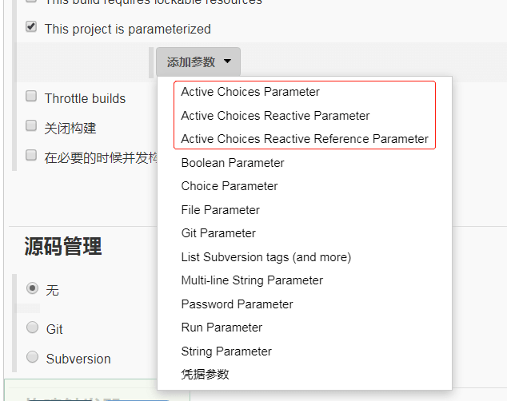
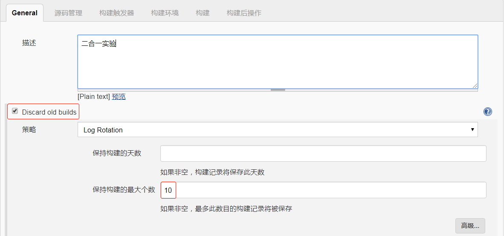
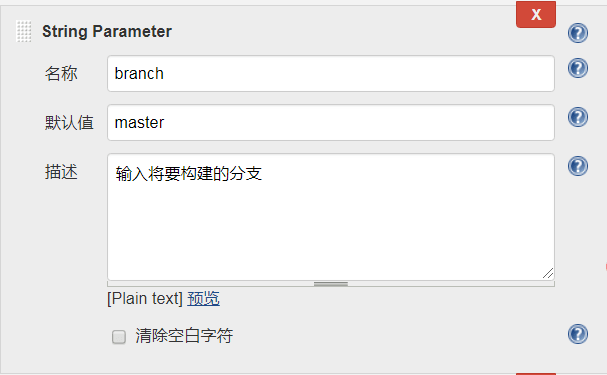
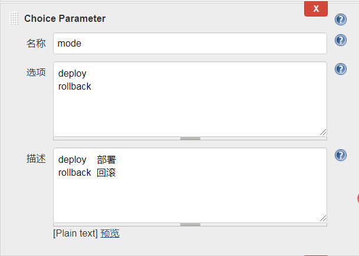
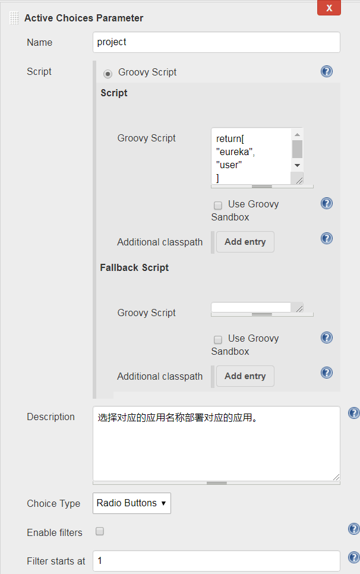
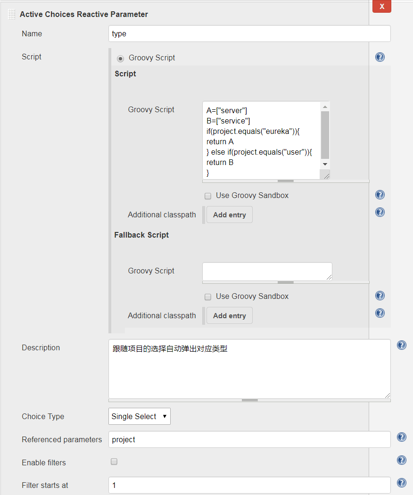
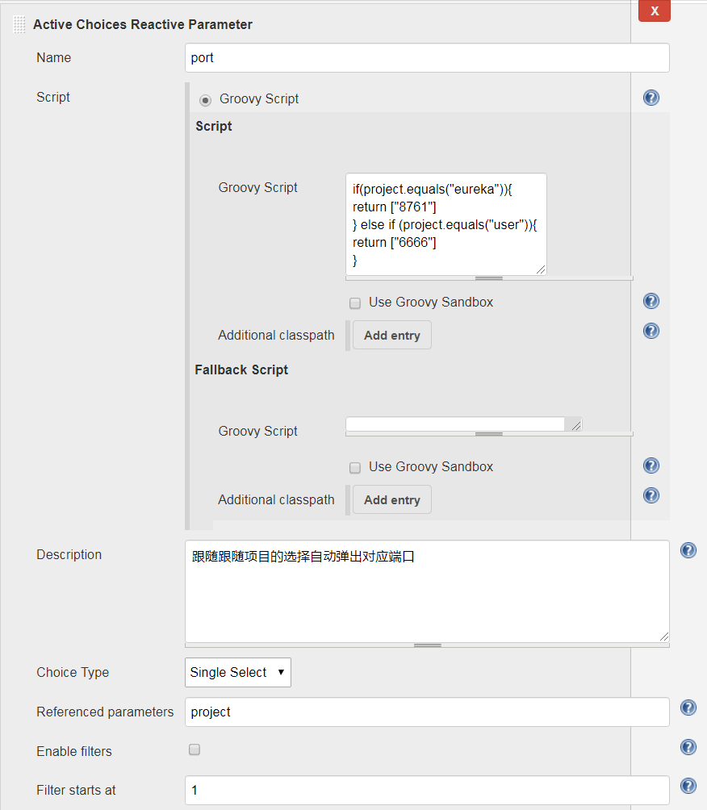
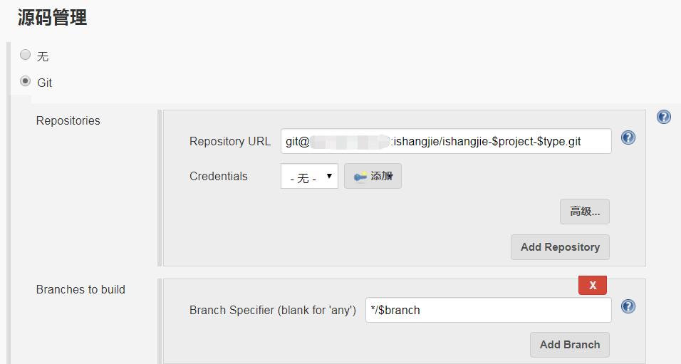
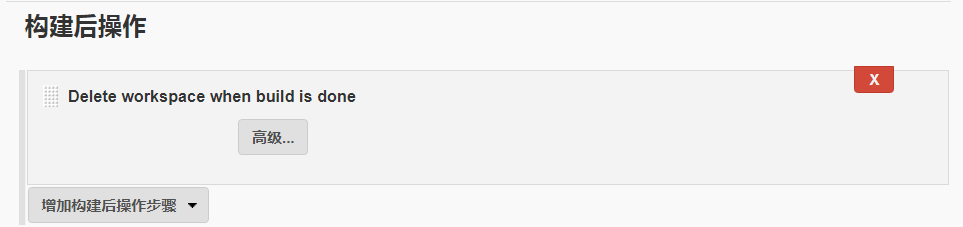
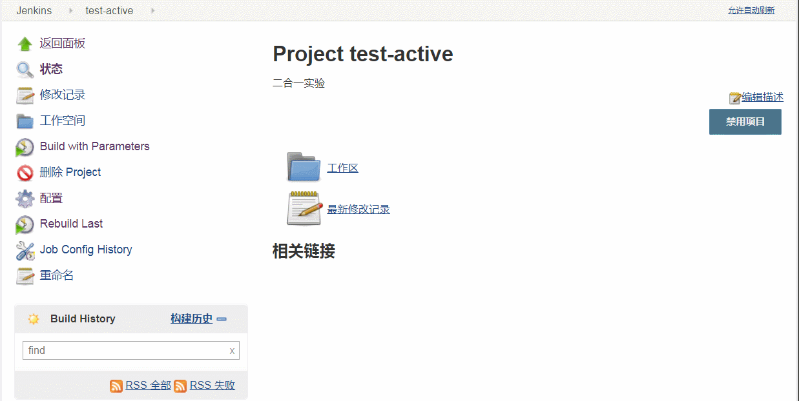

使用Active-Choices-Plugin插件将十个Job合成一个
现在Spring Cloud越来越火爆，许多公司也都在如火如荼投入使用中，而微服务最大的一个特点，就是多，同一大项目之下，可能会被拆分成十几二十几个子服务，对于运维而言，可能也需要一个对应一个地在Jenkins中创建十几二十几个Job。
刚刚还在一个博主的自我介绍里看到这样一句话：喜欢一切优雅的运维方式···
于是，我一直在想着，通过一些合理的参数变幻，从而将刚刚提到的十几二十几个服务，汇集到一个Job当中就能完成。
1，环境说明
- 主机：CentOS-7.5
- Jdk：jdk1.8.0_192
- Tomcat：8
- Jenkins：2.177
如上环境的准备工作本文就不赘述了。
2，安装插件。
- 官方地址：https://wiki.jenkins.io/display/JENKINS/Active+Choices+Plugin
- 安装方式：在Jenkins插件当中直接搜索即可安装。
- 功能说明：根据所选参数，自动调出对应参数所依赖的后续参数。
3，使用前介绍。
插件安装之后，可以在项目配置中的参数化配置中看到一些新增了的选项。

- 1，Active Choices Parameter（主动选择参数） Active Choices参数使用Groovy脚本或Scriptler目录中的脚本动态生成构建参数的值选项列表。
- 2，Active Choices Reactive Parameter（主动选择反应参数） 根据主动选择参数的选项而提供不同的对应值或者列表选项。
- 3，Active Choices Reactive Reference Parameter（主动选择反应参考参数） 根据主动选择参数的选项而展示对应参数的一些说明，与第二项的区别在于本参数只作为说明信息，而不能够作为变量往下传递。
可能刚刚这些说明都比较抽象，接下来容我通过项目实战，来对其进行一一解析。
4，配置前分析。
优秀的插件，它的优秀之处，往往是需要我们结合生产实际，开动聪明的大脑，打破常规使用套路来成就的。
因此，如何才能更好地应用插件的优秀功能，需要我们先对项目进行分析，从全局的眼光，判断项目前后该配置什么样的参数来进行联动。
这里我说明一下我准备的实验项目情况，为了简便测试，我这里仅使用两个项目来进行举例，聪明的你也一定能够通过案例进行举一反三，将二合一推广为十合一的。
两个项目的情况如下：
1，eureka
- Gitlab地址：git@192.168.10.0:ishangjie/ishangjie-eureka-server.git
- port：8761
- 包名：ishangjie-eureka-server-1.0.0.jar
2，user
- Gitlab地址：git@192.168.10.0:ishangjie/ishangjie-user-service.git
- port：6666
- 包名：ishangjie-user-service-1.0.0.jar
从刚刚这些配置里边可以看出，有不少共同点，也有不少不同点，我们只需把眼光放在不同点上，通过一些统一的变量控制，就能达到二合一的目的。
另外说明一点，这个项目已经部署在k8s环境当中，因此我的脚本内容也就展示成了k8s项目部署的流程了。
5，创建项目。
首先创建一个自由风格的Jenkins项目，然后配置一下项目构建保存历史。

6，字符参数。
添加一个名为branch的字符参数以用于控制代码分支的变量。

7，选项参数。
添加一个名为mode的选项参数以用于控制部署或者回滚的变量。

8，选择参数。
1，主动选择参数
首先添加一个主动选择参数，用于控制项目名称这个变量。

Name：projectGroovy Script:return[ "eureka", "user" ]Description：选择对应的应用名称部署对应的应用。Choice Type：Radio Buttons
2，主动选择反应参数
接着添加一个主动选择反应参数，用于控制项目类型这个变量。

Name：type
- Groovy Script:
A=["server"]
B=["service"]
if(project.equals("eureka")){
return A
} else if(project.equals("user")){
return B
}
Description：跟随项目的选择自动弹出对应类型Choice Type：Single SelectReferenced parameters：project
3，主动选择反应参数
然后再添加一个主动选择反应参数，用于控制项目端口这个变量。

Name：portGroovy Script:if(project.equals("eureka")){ return ["8761"] } else if (project.equals("user")){ return ["6666"] }Description：跟随跟随项目的选择自动弹出对应端口Choice Type：Single SelectReferenced parameters：project
这样，对应的参数都创建完毕了，大概有以下几个小的注意点需要注意：
- 1，参数的名称将是整个构建流程使用的一个变量，因此起名的时候需要注意。
- 2，创建了一个主动选择参数，和两个主动选择反应参数，是因为我们的实际需求需要两个真实有效的参数，如果最后的port项选择了主动选择反应参考参数，那么到后边是无法显式使用的。
- 3，注意后两个跟随参数中的
Referenced parameters，都需要填写主动参数的名称，才能够前后贯通，实现联动。
9，Git地址配置。
接着就该添加Git地址了，同样，这个地方也应该合理利用项目标准化的优势，合理应用变量来进行配置。
具体如下图所示：

10，执行脚本。
接下来就该通过脚本来完成构建的主要流程了。
#!/bin/bash
source /etc/profile
#
##set color##
echoRed() { echo $'\e[0;31m'"$1"$'\e[0m'; }
echoGreen() { echo $'\e[0;32m'"$1"$'\e[0m'; }
echoYellow() { echo $'\e[0;33m'"$1"$'\e[0m'; }
##set color##
#
version=`date +%Y%m%d%H%M%S`
echo -------------------------------------
# 克隆项目并编译
echoGreen "开始进行mvn编译！"
cd $WORKSPACE && mvn clean install -DskipTests=true
[ $? != 0 ] && echoRed "请注意，在执行mvn编译时出错，故而退出构建，需开发同学自检代码！" && exit 1
cd $WORKSPACE/target/ && mv ishangjie-$project-$type-1.0.0.jar app.jar
# 创建docker镜像
cat > run.sh << EOF
#!/bin/bash
source /etc/profile
java -jar /opt/app.jar --spring.profiles.active=test1
EOF
chmod +x run.sh
cat >Dockerfile << EOF
FROM 192.168.10.1/public/jdk:1.8
MAINTAINER eryajf <liqilong@edspay.com>
ENV LANG en_US.UTF-8
ADD app.jar /opt/app.jar
ADD run.sh /
EXPOSE $port
ENTRYPOINT [ "sh", "-c", "/run.sh" ]
EOF
# 构建镜像
echoGreen "开始构建当次镜像！"
docker build -t 192.168.10.1/isj/$project:$version .
[ $? != 0 ] && echoRed "请注意，在执行镜像构建时出错，故而退出构建，请联系运维同学处理！" && exit 1
# 上传到docker私服
echoGreen "开始将镜像push到私服！"
docker push 192.168.10.1/isj/$project:$version
[ $? != 0 ] && echoRed "请注意，在执行镜像上传时出错，故而退出构建，请联系运维同学处理！" && exit 1
docker rmi 192.168.10.1/isj/$project:$version
#更新镜像
echoGreen "开始将最新镜像部署到远端！"
rancher kubectl set image deployment/isj-$project isj-$project=192.168.10.1/isj/$project:$version -n isj-wfw
[ $? != 0 ] && echoRed "请注意，在执行镜像更新时出错，故而退出构建，请联系运维同学处理！" && exit 1
echoGreen "部署完成！"
针对这个脚本有几点简单说明：
- 1，因为应用到了颜色输出，因此记得在构建环境当中开启color颜色输出。
- 2，尽量在关键地方添加一下判断，然后输出明了的内容以提高生产效率，比如编译有问题，直接退出构建，输出开发自检，如果是后边构建问题，同样退出构建，输出联系运维解决。
- 3，巧用cat的EOF特性，从而也可以将不同的变量控制进来。
- 4，尽量将所有构建过程的内容都写到Jenkins这里来，以便于后期问题排查与分析。
- 5，因为这是实验，因此没有添加回滚功能，如果添加的话，就针对mode参数做一个判断即可。
11，构建后操作。
因为是多个项目在同一个WORKSPACE下工作，因此，为了避免出现不可预知问题，这里添加了构建后清空WORKSPACE的选项。

12，效果展示。
一切配置完成之后，就可以尝试一下点击构建了。

好了，这就是本期的分享，当然，关于这个插件，这里也只是介绍了其中一种一个思路，可能还有很多种其他的方案，期待各位发挥思维发掘更多妙用。